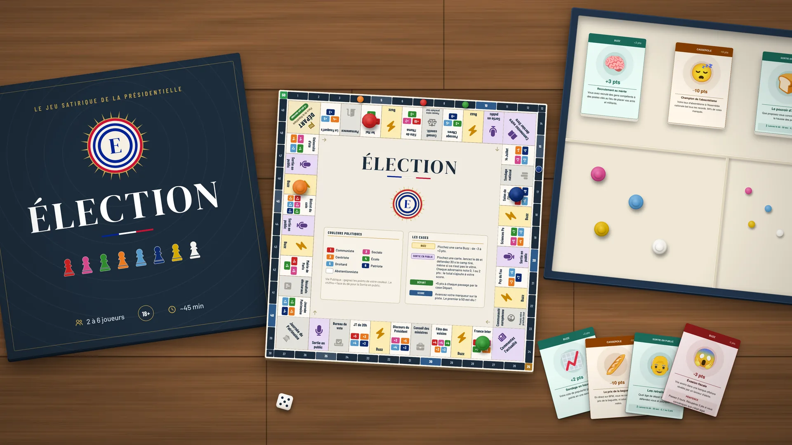
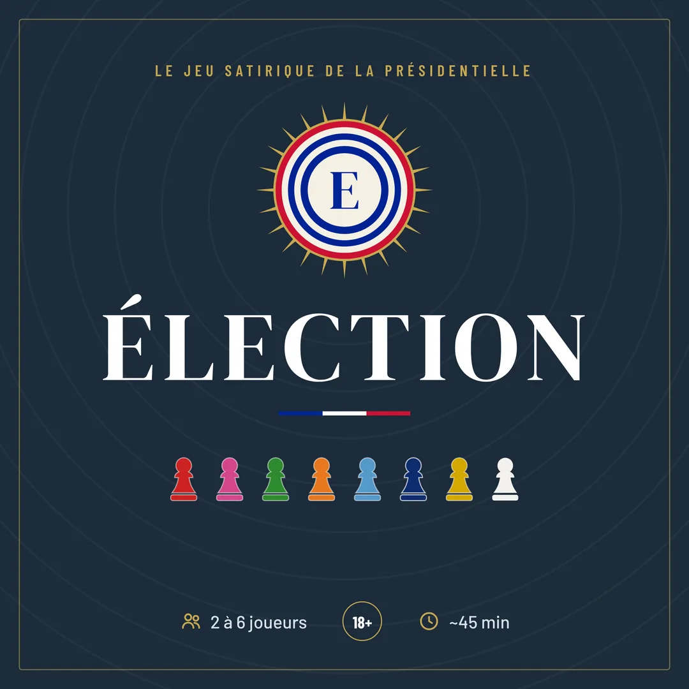

Faites campagne
Les cases Vie Publique rapportent des points selon votre camp : la Fête de l’Huma sourit au Communiste, CNews au Patriote, le Fouquet’s au Droitard.
Lancement imminent sur Ulule
Le jeu satirique de la présidentielle
Faites campagne de la Fête de l’Huma au Puy du Fou, survivez aux scandales et défendez pendant 30 secondes un camp qui n’est pas le vôtre. Premier à 50 points de Pouvoir ? Vous êtes élu.

Profession de foi
Chaque joueur incarne un profil politique, du Communiste au Patriote en passant par le Centriste « en même temps ». À chaque tour, on lance le dé et on avance sur un plateau de 40 cases : bains de foule, plateaux télé, scandales et prises de parole improvisées. Le premier à 50 points de Pouvoir remporte la présidentielle.
Les cases Vie Publique rapportent des points selon votre camp : la Fête de l’Huma sourit au Communiste, CNews au Patriote, le Fouquet’s au Droitard.
32 cartes Buzz font grimper ou plonger votre cote. Et chacun garde en main une Casserole à −10 points, à lâcher sur l’adversaire de son choix au moment le plus cruel.
Sur une case Sortie en public, le dé choisit votre camp. Vous avez 30 secondes pour le défendre, même si ce n’est pas le vôtre, puis chaque adversaire vous note de 0 à 2 points.
Les 8 profils
Six familles politiques, chacune avec ses terrains favoris. Et deux rôles à part, pour ceux qui préfèrent tirer les ficelles… ou rester chez eux le jour du vote.
Extrême gauche
Terrains favoris
Gauche, socialisme modéré
Terrains favoris
Vert, décroissance assumée
Terrains favoris
Centre, « en même temps »
Terrains favoris
Droite, libéralisme assumé
Terrains favoris
Extrême droite
Terrains favoris
Rôle spécial, faiseur de rois
Aucun bonus de terrain. S’il atteint 50 points en premier, il offre la victoire au joueur de son choix… ou entre lui-même en politique, sous la couleur de son choix, avec 40 points.
Ni gauche ni droite
Aucun bonus, mais insensible aux Buzz et aux Casseroles. Il peut changer de rôle en cours de partie, et gagne si personne n’atteint 50 points.
Revue de presse
Un avant-goût des trois paquets. Les autres cartes, vous les découvrirez autour de la table.
Autant de bonnes nouvelles que de mauvaises. Certaines cartes prévoient une pénitence pour se racheter… à condition d’être convaincant.
Buzz+3 pts
+3 pts
Vous avez recruté des gens compétents à des postes clés au lieu de placer vos amis et militants.
Buzz−3 pts
−3 pts
Vos avoirs dans une banque offshore révélés par un lanceur d’alerte.
PénitencePassez 2 tours. Récupérez 2 pts si vous convainquez que c’était légal.
Buzz−2 pts
−2 pts
Un ex-ministre publie ses mémoires. Vous êtes cité 47 fois.
PénitenceLes adversaires inventent un extrait vous concernant. Commentez sérieusement.
Une par joueur, distribuée en secret. À dégainer sur l’adversaire de son choix, une seule fois par partie.
Casserole−10 pts
−10 pts
En direct sur BFM, vous ne connaissez ni le prix de la baguette, ni celui du ticket de métro.
Casserole−10 pts
−10 pts
Votre taux d’absentéisme à l’Assemblée nationale bat tous les records. 94 % de votes manqués.
Un thème d’actualité, un coup de dé, 30 secondes pour convaincre la tablée.
Sortie en public
Quel âge de départ à la retraite défendez-vous et pourquoi ?
Lancez le dé · 30 s · 0, 1 ou 2 pts
Sortie en public
Que proposez-vous concrètement face à la hausse des prix ?
Lancez le dé · 30 s · 0, 1 ou 2 pts
Sortie en public
Nucléaire ou renouvelables : quelle est votre vision pour 2050 ?
Lancez le dé · 30 s · 0, 1 ou 2 pts
À vous de jouer
Tirez un thème, lancez le dé et défendez le camp désigné pendant 30 secondes devant vos amis. Chacun vous note ensuite de 0 à 2 points.
1 · Le thème
Les retraites
Quel âge de départ à la retraite défendez-vous et pourquoi ?
2 · Le camp
Le dé désigne le camp à défendre.
3 · Le chrono
30 secondes pour convaincre.
Le terrain de campagne
Un tour de France des passages obligés : bistrot du coin, JT de 20 h, Salon de l’Agriculture, université d’été… Gare au Conseil constitutionnel et à la Communauté européenne : on y passe son tour.
Gagnez les points de votre couleur.
Piochez une carte : de −3 à +3 points.
Défendez 30 s le camp tiré au dé, les adversaires notent.
Sondage national, bureau de vote, Conseil des ministres… des effets variés.
Place de la République : +5 points à chaque passage.
« Rire de la politique à table, sans que le repas tourne au débat d’entre-deux-tours. »
J’ai créé Élection pour ça. Ici, tout le monde en prend pour son grade : la gauche, la droite, le centre, les extrêmes, et même les journalistes. Personne n’a le beau rôle, et c’est ce qui rend la partie drôle.
Avec les Sorties en public, le dé peut vous obliger à défendre le camp d’en face pendant 30 secondes. On découvre que ses arguments sont plus coriaces qu’on ne le pensait… et on en rit ensemble.
Le jeu a d’abord été testé entre amis, en version imprimée. Avant la présidentielle de 2027, je vous propose de vous entraîner autour d’une table : en famille, entre amis, ou avec l’oncle qui a un avis sur tout.
HugoCréateur d’Élection

Rejoignez la campagne
La campagne de financement participatif ouvre bientôt sur Ulule. Les contributeurs recevront la première édition commercialisée du jeu.
Ou écrivez directement à gervaishugo [arobase] yahoo.fr
Conférence de presse
Non. Chaque camp a ses terrains favoris, ses atouts et ses casseroles, et le Journaliste comme l’Abstentionniste viennent brouiller les cartes. Le jeu se moque de tout le monde, à parts égales.
Pas du tout. Avoir déjà regardé un JT ou survécu à un repas de famille suffit. Les Sorties en public se gagnent à l’aplomb plus qu’à l’expertise.
Le jeu manie l’humour grinçant : affaires, petites phrases, scandales et sujets d’actualité brûlants. Il s’adresse aux adultes.
De 2 à 6 joueurs, pour une partie d’environ 45 minutes. Le premier à 50 points de Pouvoir est élu.
En contribuant à la campagne Ulule dès son ouverture : les contributeurs recevront la première édition commercialisée. Inscrivez-vous sur la page Ulule pour être prévenu du lancement.
Oui, en devenant testeur du prototype. Écrivez à Hugo pour participer.